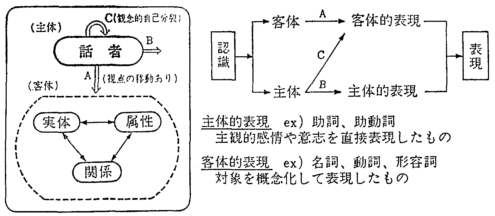
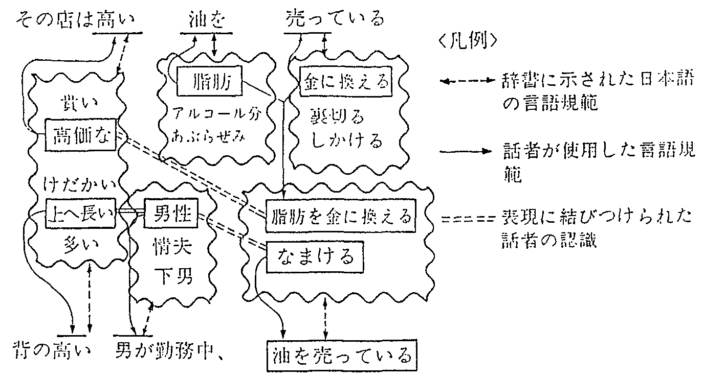
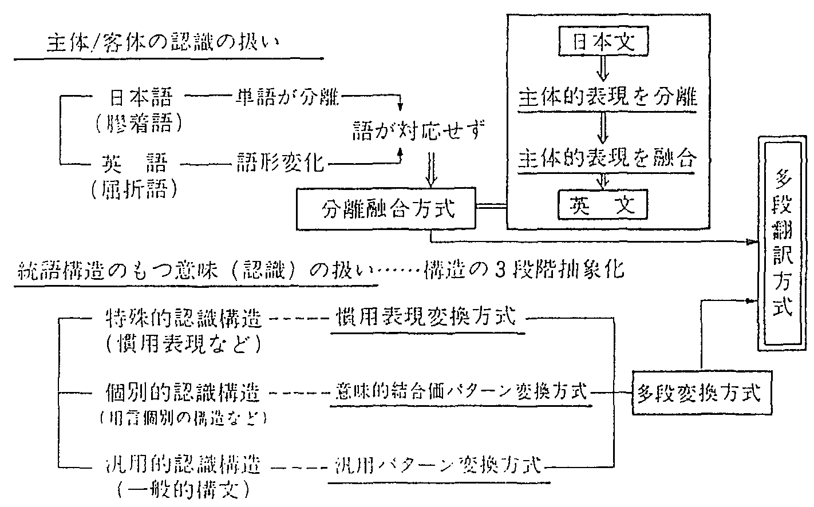
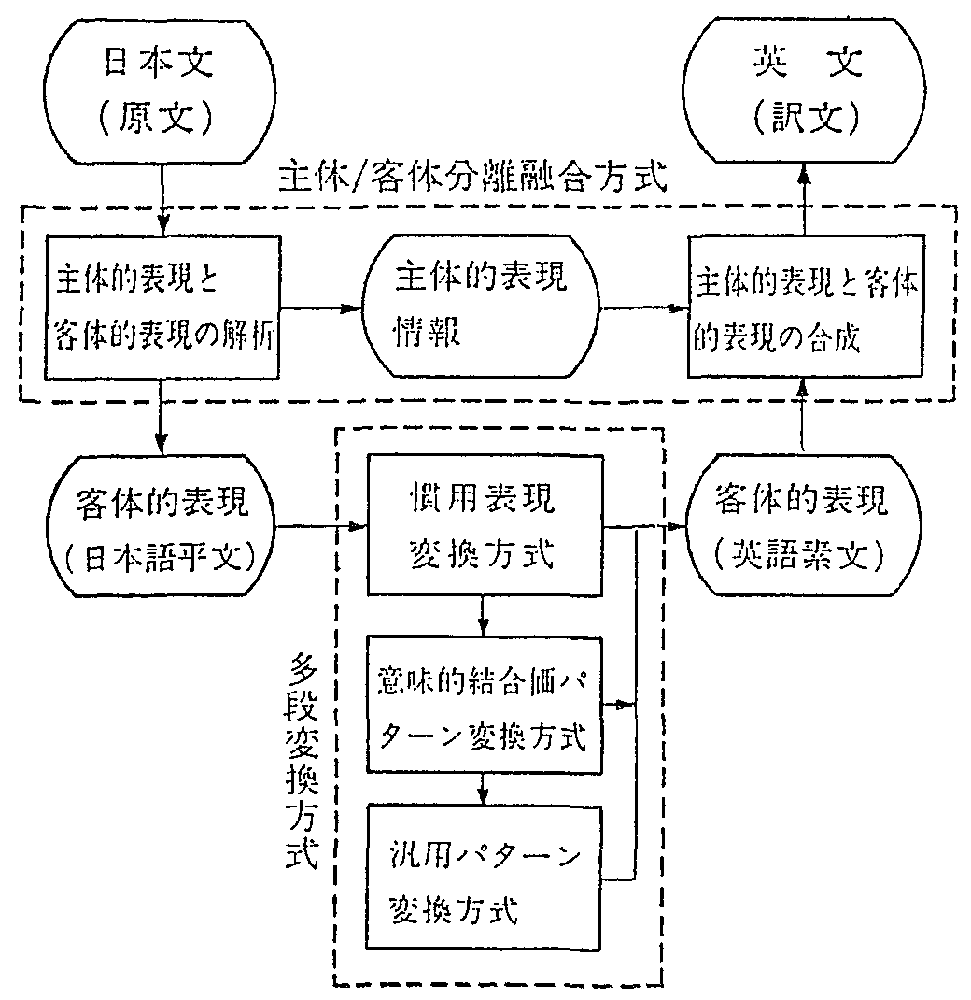
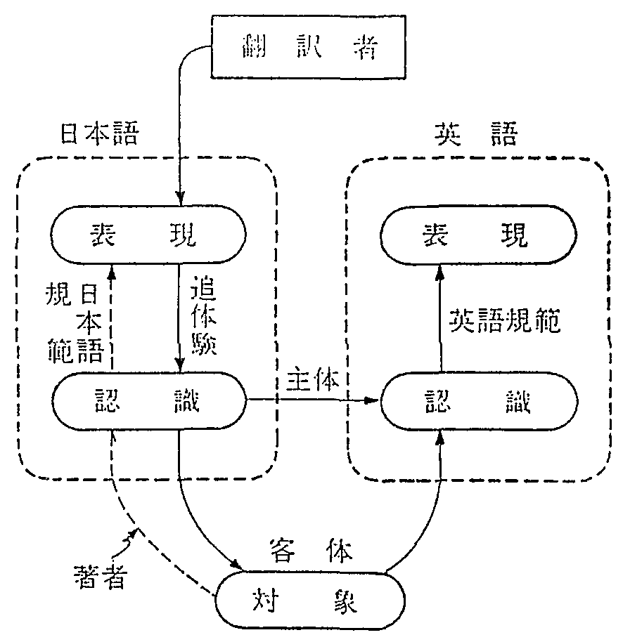
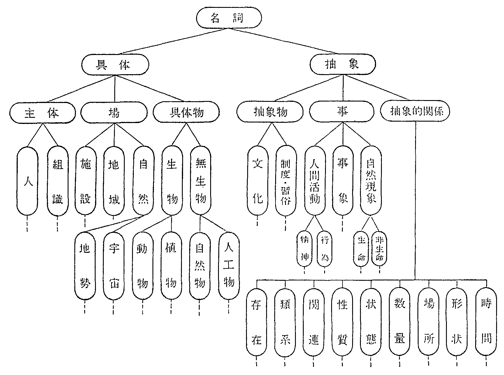
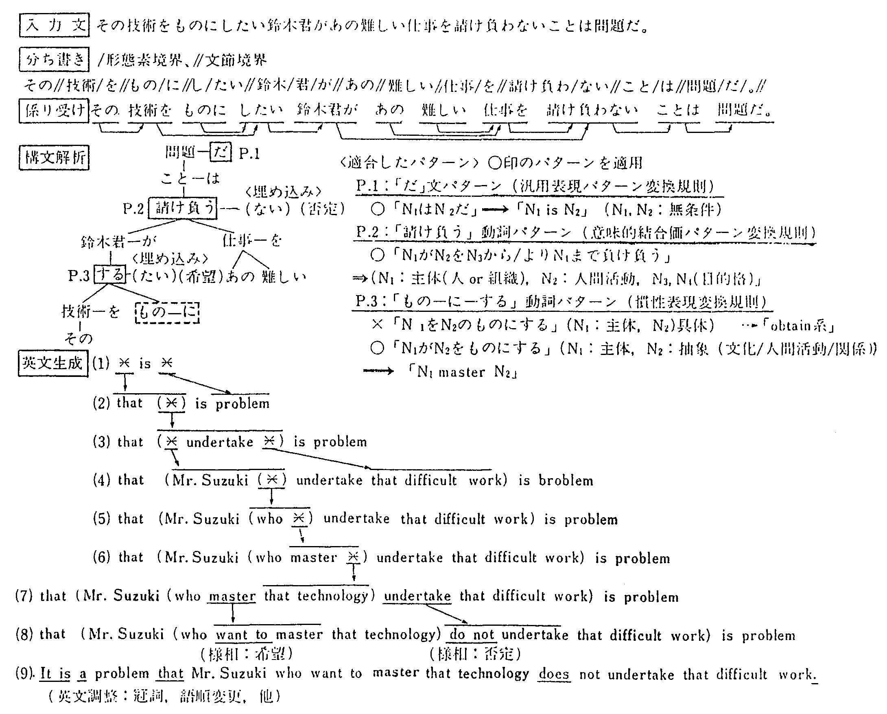
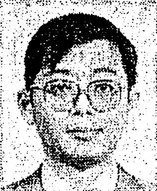
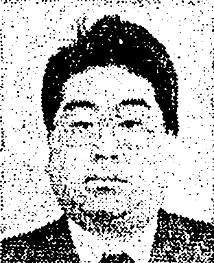

言語過程説の立場から，「対象」，「認識」，「表現」の関係に着目して， �ー臑里筏丗里紡个垢誅端圓稜Ъ韻諒�析と，��統語構造と意味の統一的扱い， の２点が自然言語処理の重要な課題であることを示し， これらの課題を実現する機械翻訳の方式として「多段翻訳方式」を提案する． 本方式は上記の課題に対応する２つの部分的な方式， すなわち，主体的表現／客体的表現分離融合方式と多段変換方式から構成される． 前者は原言語における主体的表現を解析し， 話者の主観的感情や意志を抽出して目的言語に組み入れるものである． また後者は主体的表現情報抽出後の原文（客体的表現）を 客体認識の構造的抽象性のレベルに応じて特殊的認識構造，個別的認識構造， 汎用的認識構造の３段階の構造的枠組みで捉え，それぞれに対応する３つの変換方式， すなわち，慣用表現変換，意味的結合価パターン変換，汎用パターン変換によって 目的言語に変換するものである． 本方式は目的言語への変換の過程ではもちろん， 原言語の解析の過程においても文構造の持つ意味をすくい取るものであるため， 言語解析の基本的課題である多義解釈においても優れた効果が期待できる． また，変換規則は相互独立性が高く，相互矛盾の検証範囲が極小化されるため， システムの成長が容易であると期待される．
自然言語の研究は自然科学と異なり，人間の知的産物である自然言語が研究対象であるため， 人間の精神活動の捉え方の違いによって種々の言語の説明が行われてきた． 例えばソシュールの構造言語学1)〜3)では 人間の精神活動を先天的観念実体ラングの中に位置づけ， 社会的で有限な言語規範をその内容と説明したが， このような形式に着目した構造言語学や言語の形式と機能を組み合わせた 従来文法4)では，同形式異内容の言語現象の説明ができない． そこで，チョムスキー5),6)は もっと抽象的な性質をもつ構造を意味とすべきだとし， 万人に共通の思考の能力を想定して深層構造を設定した． これは表現の内容に目を向けた点では評価されるが，内容を対象と切り離して考えたため， 対象の反映論が欠落し，形式と内容を対立的に捉えた二元論的な 説明7),8)と なっている☆． しかし，言語の形式（表現の構造）は対象のあり方とそれに対する話者の認識のあり方が 反映したものであるため，形式と内容は相互に支え合う構造をもっている． したがって，表層と深層を分け表現（表層）と離れたところに 深層構造のような意味構造を仮定するのではなく， 表現に結びつけられた対象と話者の認識の関係に意味を見る必要があると考えられる．
最近の機械翻訳の研究12),13)においても 生成変形文法の流れをくむものが多く，「言語間で内容は共通」とする立場から， 言語に共通した意味構造を仮定した翻訳方式が志向されている． しかし，言語が「対象」，「認識」，「表現」からなる 過程的構造14),15)をもつことに 着目すれば，言語に共通するのは「対象」だけであり， それに対する認識の仕方は個人で異なると同様，言語でも異なることが指摘できる． したがって，言語に共通する深層構造を表現の意味として仮定することには 困難さがあり☆， 質の良い翻訳を実現するには原言語と目的言語の認識構造の 違い16)〜19)を考慮した 翻訳方式を考えることが必要と思われる．
本論文では言語過程説14),15)の 考えに従い，言語における話者の認識の枠組みの違いを考慮する立場から， �ー臑療�表現と客体的表現で表される認識の内容，�∧弦渋い醗嫐�の一体性， の２点の扱いが重要であることを示し，これらを考慮した多段翻訳方式を提案する． また，本方式を実現した日英翻訳実験システムを取り上げ，本方式による翻訳の過程を示す．
チョムスキーに始まる生成変形流の言語学説と時枝学説の言語の捉え方の違いを示すと 図１のようになる． 生成変形文法では言語を表層構造と深層構造の二者の関係で捉え， 深層構造を対象のあり方と独立して話者の心理内に存在するものとして説明し， これを意味と考えたのに対して，時枝学説では言語を対象と認識と表現の三者の関係で捉え， 対象のあり方が話者の認識に反映している点を反映論で説明し， 認識と表現の関係を言語規範で説明している点で本質的に異なっている．
（話者の心理）
┌────┐ ┌────┐ ┌────┐ 意味‥‥‥深層構造のこと
│深層構造├──→│ 変形 ├──→│表層構造│ (注)表層の表現とは別の
└────┘ └────┘ └────┘ ところに意味がある
↑ ↑ ‖
（意味） （意味を変えない） ‖
表現
(a) 生成変形文法の説明（種々の変種あり）
┌─────┐
│関係＝意味│
└──┬──┘
┌───┴───┐
(実在/仮想) │ (話者) │
┌────┐ ↓ ┌────┐ ↓ ┌────┐ 意味（三浦文法による）
│ 対象 ├─→│ 認識 ├─→│ 表現 │ 表現に結びつけられた
└────┘ └────┘ ↑ └────┘ 対象と認識の関係
媒│介 (注)語は使われて（表現と
┌──┴──┐ なって）始めて意味（関
(自然発生的/社会的)→│ 言語規範 │ 係）をもつ
└─────┘
(b) 言語過程説（時枝文法）の説明
|
従来の翻訳技術の研究では格文法など生成変形文法の流れをくむ考え方に基づくものが多い． 例えばピボット方式では，人間に共通する深層構造を仮定し， もしくは言語に共通する対象のあり方に着目して，これを言語に独立した中間言語で 表現することを仮定している☆． また概念構造変換方式20),21)では 現実にはこのような中間言語の設計は困難であるとする立場から一歩進んで 深層構造の言語依存を認め，言語依存の深層構造を中間言語として設定しているが このような中間言語で意味を捉え切れない 欠点がある☆☆． いずれの場合も対象のあり方と話者の認識のあり方の関係への視点が無く， 反映論が欠けている点で共通している． 対象と認識の関係を考えるなら対象は認識に反映するが，それは機械的な反映ではなく， 認識は対象に対して相対的独立性をもつことが指摘できる． すなわち，対象のあり方は共通していても人によって見方，感じ方が異なり， それが表現に反映する． 対象の見方，感じ方は人間の集団によっても差が生じる． この差が言語のもつ表現の枠組みの逢いに 影響している24),25)と 考えることができる． したがって，翻訳においても対象と認識を区分して捉え， 同一の対象に対しても言語によって認識の枠組みが異なることに着目して方式を考えることが 必要☆と考えられる．
そこで次節では話者の認識のあり方を見る立場から表現の枠組みについて考える．
(1) 主体と客体の認識
話者が認識する対象世界は図２に示されるように， 主体である話者自身とその他の対象である客体から構成される． 話者は自分以外の客体と自分自身の双方のあり方を認識して表現に結びつける． 時枝文法14)によれば， 日本語表現は以下の２種類の表現から構成される．
| i) 主体的表現 | |
| 話者の主観的感情や意志を直接表現するもので， 日本語では助詞，助動詞などが用いられる． | |
| ii) 客体的表現 | |
| 対象を概念化して捉えた表現で，日本語では名詞，動詞，形容詞などで表される． 主体も概念化すれば客体的に表現される． |
このような関係はインド・ヨーロッパ系言語においても ポール・ロワイヤル26)によって指摘されている．
|
 |
(2) 認識と表現の結びつき
話者の認識する客体は大きく分けて実体，属性，関係の３つの概念で捉えることができる． これらはいずれも構造をもっており，その構造が認識を通して表現に反映される． 実体は全体，部分などの階層的な構造をもち，属性は実体との結びつきの構造をもつ． 関係も実体間の関係，属性間の関係，関係同士の関係などでそれぞれの構造をもち， 実体，属性，関係が複合されて総合的な構造が形成される． この構造を話者が認識するとき，話者の見方，考え方によって種々の捉え方が生まれる． 各言語はこれらの話者の見方，考え方を表現する枠組みをもっている． 実体を個別的，具体的に捉える時は固有名詞を用いたり， 最も抽象的に捉える時は抽象名詞（「もの」，「こと」：形式名詞とも言う）を用いたりする． また，「ＡがＢからＣへ移動する．」という動的属性を話者の視点に合わせて「Ｃに行く」， 「Ｃに来る」などと表現する枠組みがある．
このように，言語表現には対象のもつ構造が反映されているが， それは話者の認識を通して反映されるものであり，対象が直接表現に結びついているのではない． 言語の違いは話者の認識の枠組みの違いであるから， 翻訳では原言語の枠組みの中で捉えられた主体と客体のあり方を 目的言語の枠組みの中で捉えなおして表現することが必要と考えられる．
(1) 意味の解釈について
従来，言語学においては言語の意味については，カッツ10)， グライス18)，サアル27)， ソシュール1)， ワイスマン28)など数多くの説が出されているが， 定説と言えるものはない． 翻訳の研究においても意味の定義をしないまま意味解析や意味理解の技術を論じている場合が多い． ここでは言語過程説の立場から意味を定義するが，時枝説の一部を言語認識論の立場から改訂した 三浦説15)に従い以下のとおり定義する． すなわち，言語表現には話者の認識を通して捉えられた主体と客体のあり方が結びつけられている 点に着目して，表現の意味はその表現に結びつけられた対象と認識の関係であると考える． したがって，表現があって意味（関係）が生じる． 辞書に記載された語の意味（語義）は厳密には意味ではなく， 言語規範（広義の文法）と解される． それが使われたとき対象と認識への結びつきが生じ，初めて意味（関係）をもつことになる． このように考えると，意味解析は表現に話者のどんな認識が結びつけられているかを調べること， およびそれを通じて対象がどんな存在であり， 話者がそれをどう見ているかを解析することであると言うことができる．
(2) 統語構造のもつ意味
話者は語の約束，句や節の約束などを用いて自己の認識を立体化して表現するが， この立体化は意味に支えられた構造化に関する文法規則に基づいて行われる． すなわち，対象のあり方が話者の認識に反映し，それが構文に反映する． これは構文が対象と認識に結びついていることであり， 統語構造が意味の一部であることを意味する． 生成変形文法のように構造と意味が表層構造と深層構造のように対置されるものではなく， 意味は表現（表層）と認識，対象の結びつきであり，表層の構造は意味の一部と言うことができる． したがって，厳密に言えば，意味を変えない変形はあり得ないことになり， 通常言語処理で行われる変形は近似的な表現への変形である． 従来，「翻訳とはイディオムを訳すことなり」とする 考え方29)もあるが， これは統語構造と意味の一体性を述べたものと言える． 統語構造のもつ意味を考えないで部分の意味から全体の意味を合成しようとする 要素合成方式（原子論的方法）では，構造のもつ意味の欠落を防ぐことは困難と 考えられる☆．
(3) 構造の意味による多義の解決について
読者が話者の認識を追体験する時の手がかりとしては２通りの知識が用いられる． １つは言語規範（文法）に関する知識であり， もう１つは話者が対象とする世界に関する知識（言語外知識：常識など）である． 翻訳の対象とする文で扱われる世界の知識を網羅的に取り扱うのは困難であるので， ここではまず言語知識について考える． 言語知識としての言語規範を考えると 図３に示されるように一語の語義についても種々の約束があり， 話者がそのうちのどの約束を用いたのかを判定する必要がある． そこで構造のもつ意味を考えるならば，語と語の結びつきの中に， それぞれの語がどの約束（語義など）で使用されたかを知る情報が含まれている． 句や節についても同様，それらを含むもう一段上の構造の中に多義を解決する手がかりがある． したがって，語や句や節の多義を解決するには それらを含む上位の構造の中で捉えることが必要と言える． すなわち，意味と構造を一体化して扱うことには多義を絞る上でも効果が期待できる．
|
 |
文法書と辞書で代表される言語知識の範囲で， 一文単位に独立して翻訳の可能な文を一文完結型の文と呼び， この範囲☆の実用文を対象とする 日英翻訳方式として，図４に示す考え方に従い，多段翻訳方式を提案する． 本方式は以下に示す2つの部分的な方式から構成される．
|
 |
日本語は膠着言語の特徴として，主体的表現に助詞，助動詞などの単語が用いられるのに対して， 英語は屈折言語の特徴として語の屈折（語形変化）を伴って 主体の直接的表出が行われることが多い． したがって，日本語の主体的表現の語と英語のそれとは直接的に対応しないことが多く， 逐語的翻訳は困難である． そこで，日本文に表された話者の認識を解析するに当たって，話者の主観的感情や意志を分類し， 与えられた日本文の主体的表現の部分が，どのような感情や意志を表しているかを判断する． この過程でもとの日本文は平文に変換される． 平文は主体的表現を抽出したあとの 客体的表現☆である． この客体的表現は次節で述べる多段変換方式によって英語の客体的表現（英語素文）となる． そのあと，既に抽出されている話者の感情や意志が英語素文に対して組み込まれる． この組み込みでは，助動詞や前置詞の挿入のほか，種々の語の屈折（変形）が行われる． このようにして，本方式では日本文中から分離された主体的表現情報が 英文生成の段階で英文に融合される．
主体的表現情報を抽出したあとの日本文（客体的表現）には 客体のあり方が話者の見方を通して表されている． 客体に対する話者の認識も種々の構造をもちそれが客体的表現の構造に反映している． 表現の変形が意味を変えること， 構造が意味をもち意味と構造を一体化した扱いが必要なことを考えれば， 日本語のすべての表現に対応した英語表現をもち それらを一対一に対応させれば論理的には翻訳の近似度は向上するが， そのためには無限の数の表現の収録が必要となり工学的には困難である． そこでこの矛盾を工学的調和させるため ここでは構造と意味の結びつきの強弱に着目して構造を以下の３段階に抽象化し， 各レベルに応じた構造の変換方式を考える．
(1) 特殊的認識構造（慣用表現変換方式）
ことわざ，慣用句，熟語など複数の語から構成される表現で 一語一語の意味からだけでは表現の意味が説明できないもの， 言語特有の固定的いいまわしを言う． 通常日本語の慣用表現と呼ばれるもののほか， 日本語の二語以上の表現が英語の一語に対応するもの， 訳出時に英語の慣用表現に対応させるのが望ましい表現を含む． このような特殊的認識構造は要素合成方式では翻訳が特に困難であり， 日本語と英語の構造を対応させた慣用表現変換規則によって文構造のもつ意味をも そっくりすくい取った変換を行う． 特殊的認識構造では特定の複数の単語が用いられるため， このパターン対辞書は該当する単語の組に対してエントリーが設定され， 日本語表現の中にその組合せが現れたときは適用条件の許す限り優先的に適用される．
(2) 個別的認識構造（意味的結合価パターン変換方式）
特殊的認識構造よりも若干汎用的な認識構造を言う． 具体的には特殊的認識構造が二語以上の語の字面が固定されるものであるのに対して， 個別的認識構造は二語以上の組み合わされた表現のうち一語の字面（見出し語）が固定され， 他の語はその語の単語意味属性に制約をもつものを言う． 用言の字面を固定した場合は その用言と結合する文節のもつ助詞の字面と名詞の意味属性が規定される． このような個別的認識構造を捉える枠組としては， 格文法の方法や結合価文法の方法が考えられるが， 用言と結合する文節が深層格として抽象化されず， 結合の手として助詞が明示される点が格文法25)と異なる 結合価文法32)の特徴であり， 文構造を個別的に捉えるのに適している．
ここでは結合価文法に意味的制約を加えた意味的結合価文法を用いる． 意味的結合価パターンでは，結合価文法の方法に比べて 各文節に対する精密で排他的な意味属性体系に支えられた個別的制約条件をもつことによって， 深層的格カテゴリーでは分類できない文構造の持つ意味をも 英語に対応させることを可能としている☆． 変換用辞書ではこのような日本語の個別的認識構造に対応する英語の認識構造が対にして 登録されるが，英語側の記述では日本語の見出し語に対する英語訳語のほか文要素の語順， それにつく前置詞などが指定されるため，日本文の構造のもつ意味を英語に写し取ることができる． パターンの作成に当たっては見出し語の語義ごとにパターンを作成することが必要であり， またそのうちどのパターンを適用するかを一意に決定するためには 単語意味属性体系を十分精密に決定することが必要であるが， 見出し語は相互に独立しており，見出し語ごとに複数のパターンが対応する構造であるため， 変換規則相互の無矛盾性のチェックは原則として同一見出し語内のパターン相互間に絞られるため， 変換規則を容易に成長させることができる．
(3) 汎用的認識構造（汎用パターン変換方式）
上述の２つの方式では 特定の語もしくはその組合せに着目して表現の構造をパターン化して捉えているのに対して， ここでは語の字面は特定せず ある文法的もしくは意味的カテゴリーの語のグループごとにパターンを対応させることを考える． 例えば動詞を瞬間動詞，継続動詞などに分けたり， 「だ文」（「ＡはＢだ」の形式の文）をＡ＝Ｂの場合とＡ≠Ｂの場合に分けるなどにより， それぞれのパターンに応じた変換規則を設ける． このような方法は語の字面を固定しない意味で 前述の２方式に比べてより抽象的で汎用的な方法と言うことができる．
以上の３段階からなる多段変換方式においては， 特殊性の高い表現パターンほど近似度の良い訳文が生成されるから， 慣用表現変換，意味的結合価パターン変換，汎用パターン変換の順に優先して変換が行われる． パターン辞書の不備によって該当する慣用表現パターンや 意味的結合価パターンの無いときは汎用パターンが用いられるため， 翻訳品質は低下するが，パターン辞書が完傭するにつれて翻訳の品質の向上が期待される．
多段都訳方式は図５に示すように， 主体的表現／客体的表現分離融合方式と客体的表現に対する多段変換方式の２つの部分的方式を 組み合わせた翻訳方式で走る．
|
 |
本方式では図６に示す人手部訳のプロセスと類似の手順で翻訳が行われる． すなわち，人手部訳では翻訳者は与えられた表現に結びつけられた話者の認識を 日本語規範に照し合わせて追体験し， 話者の目から見た客体のあり方とそれに対する話者の直接的感情や意志を知る． これに対して本翻訳方式では客体のあり方は日本語素文（客体的表現）， 話者の感情や意志は主体的表現情報として分離される． 次に，人手翻訳では客体のあり方の英語の枠組みの中での捉えなおしが行われ， 同時に主体のあり方の融合が行われるが， 本方式では客体的表現のもつ意味が３段階の変換からなるパターン変換によって 英語の枠組みの中に写し取られ，最後にそこで得られた英語素文と主体的表現情報が融合されて， 目的の英文が生成される．
|
 |
多段翻訳方式の狙いが，話者の認識に焦点を合わせ，主体と客体のあり方を解析し， 文構造のもつ意味を失わないように英語に変換することであることは既に述べた． ここではその他の特徴を示す．
(1) 日本文等価的変換の必要性
特殊的認識，個別的認識構造，汎用的認識構造の順に，意味が正確に捉えられることを考えれば， 翻訳の品質を上げるには慣用表現辞書と意味的結合価パターン辞書を拡充し， 中でも慣用表現の適合率を上げれば良いことになる． しかし使用頻度の少ないパターンをむやみに増やすことは 不要な多義を発生させる点と処理の負荷を増す点からも必ずしものぞましいことではない． そこで英語の表現の選択において訳し分けの必要な範囲で 日本語のパターンを縮退させパターン数を絞ることが大切と考えられる． このようにした場合，特に意味的結合価パターンの適合率を上げ， 汎用パターンへの流れを減少させるためには 日本語内での以下の表現の縮退や書き換えが有効と考えられる．
第１は漢字表記，かな表記や送りがななどのゆらぎを取るため， システムの標準表記に合わせて入力文を変換するものである． 第２は主体的表現情報を抽出したあとの客体的表現を パターン辞書の登録情報と比較しやすくするもので， 特に複数の助詞等を組み合わせた連語的表現など英文の表現を変えない範囲で， 代表的な助詞的表現に縮退させるものである． 第３は英語を意識した 日本語内の表現書き換え☆である．
(2) 解析と変換の融合
本方式では日本文解析は慣用表現変換規則， 意味的結合価パターン変換規則の適用可能な構造を発見すること， もしくは抽出することを目標に進められる． したがって，解析処理の中でこれらの辞書を参照し， 適合するパターンはすべて取り出され，それを用いた解釈が実行される． この解釈においては，適合したパターンのもつ文要素は分解されず， 一まとまりの構造体として扱われる． 日本語パターンは英語パターンと対になっており， 適用される日本語パターンの決定はすなわち生成する英語パターンの決定を意味する． したがって本方式でほ，日本文の解析処理と日英変換処理が融合したプログラム構造となる．
以上から，本方式は解析，変換の融合した融合方式33) もしくは人工知能型翻訳方式34)と類似した方式であると 言うことができる．
(3) 多義解消効果
解析の多義は求める分解能の割に使用する情報の少ないことから生じる． 文法的情報だけでは翻訳処理で生じる多義の解消は困難であり， 従来意味的情報として単語の意味属性を２単語間の関係解析として用いる方法が考えられている． これに対して本方式では単語の意味と文構造のもつ意味とが一体化された種々のパターンを もっており，これが解析の段階で使用されることに さらにより多くの多義が解消できるものと期待できる． 文要素間の結びつきがパターンの中に示され，複数の文要素が一体化して扱われるため， 係り受け関係の解析では複数の要素間の関係が同時に決定され， 訳語の選択ではパターンから直接訳語が与えられたり， 排他的な意味的属性の制約から訳語が決まるなど不要な多義の増大が防止される． 重文，複文のような用言間の文要素の取り合いにおいても， パターンの構成条件から文要素の係り先を絞り込める効果が期待される．
(4) 変換規則の相互独立性とチューンアップの容易性
慣用表現変換規則および意味的結合価パターン辞書はいずれも万単位の規則を持つことになるが， 適用範囲が特定されている．少なくとも異なる見出し語のパターンは相互独立と考えて良いため， パターン内の相互依存性は小さい☆． すなわち，一部の規則の変更が他の規則との矛盾を発生させる可能性は 同一の見出し語をもつパターンに限定されるため，変換辞書のチューンアップが容易となる． したがって，現存する文章の翻訳実験によって不良パターンの改良， 不足パターンの追加が比較的容易に行える．
入力された日本文は図７に示すように， 形態素解析のあと文要素間の係り受け関係の解析が行われる． そのうち用言の間の関係の認定の結果に基づいて単位文が抽出され， さらにその中から単文が抽出される． 単位文は文の述語中心の木構造に展開したとき，最上位のレベルでの述語が単一の文であり， レベルの異なる埋め込み文などを含むこともある． これに対して単文は単位文を単一の用言しか持たないレベルに分解したものを言う． これらの分解に当たっては後の文の組み立て合成に備えて， 用言間の接続関係情報の保存が行われる． 単文の抽出後はこれが解析の単位となる． 単文は述部に現れる主体的表現の解析によって様相， 時制などの主体的表現情報などが抽出されたあと，平文に変換される． 平文は単文から主体的表現情報を抜き取ったあとの文で，日英パターン対変換の単位となる． 以上の処理は係り受け結果に多義の残るときは原則としてすべての解析候補に対して実施され， 平文レベルでのパターンに対する解釈の結果に基づいて最終的に一つの解釈が決定される． 解釈決定時には日英変換で使用される文型パターンは決まっているため，あとはそれを適用し， 英語の客体的表現である案文を生成し，様相，時制，接続などの情報を付加していけばよい．
�〃疎崛撚鮴蓮邸邸邸邸邸邸妬�ち書き、単語文法カテゴリの決定 │ ��係り受け解析‥‥‥‥‥‥文要素間の関係の決定 │ ��Ｊ／Ｊ変換‥‥‥‥‥‥‥日本語内での表現変換 │ �っ永乎蟒弌邸邸邸邸邸邸邸天犬蠎�け解析結果から各用言の支配範囲を決定 │ �エ�単文解析 │└┐ │ ��述部解析‥‥‥‥‥‥様相等を抽出し、平文化する │ │ │ ��名詞句解析‥‥‥‥‥名詞句、視合語の意味構造の決定 │ ��埋込み文解析‥‥‥‥‥‥連体修飾等の意味構造を決める │ ��平文英語変換‥‥‥‥‥‥パターン対辞書で客体的表現を変換 │ ��接続解析‥‥‥‥‥‥‥‥用言間の関係を決める │ ��最適結果選択‥‥‥‥‥‥文全体の多義を絞り込む │ ��│単位文生成 │└┐ │ ��基本構造生成‥‥‥‥英文全体の構造を決定する │ │ │ ��副詞句生成‥‥‥‥‥様相、時制、動詞等から副詞句訳決定 │ │ │ ��名詞句生成‥‥‥‥‥句構造と複合語構造の変換、埋込み文組込み │ �粟楝街渋だ言�‥‥‥‥‥‥接続属性、主語の有無等に応じて単位を接続 │ �瑛輿蝓�時制構造生成‥‥‥助動詞、不定詞の押入、語形／構文変形など │ �憶冓個汗亜邸邸邸邸邸邸邸貼面鵝�外置変形、冠詞付与、その他 |
日本語と英語の捉え方の違いによって， 日本語の主体的表現が必ずしも英語の主体的表現に訳出されるとは言えない． 日本語の主体的表現で表される情報を英語から分類すれば， 法，時制，相，態，などになるが，英語表現からみれば前２者は主体的表現であり， 後２者は客体的表現である． そこで，ここでほ日本語の主体的表現の内容を英語側の分類に合わせて解析する． まず，英語では時制☆については 相と組み合わせた表現が多いため，時制＆相状態に関する解析として扱い， 法は態と合わせて様相解析☆☆として扱う． 助詞のうち副助詞や終助詞などの持つ情報も様相に分類して抽出する． 次に接続を考えるとこれを表す語には主休的表現と客体的表現としての用法があるが 現段階では機械的判定が困難である． また事象間の時間的関係の認識の枠組みが日／英言語間で直接対応しないなどのため， ここでは接続関係を主体的表現の枠組でまとめて扱う．
(1) 時制と相状態属性の決定
まず動詞の分類に従って着目する文の相（開始相，継続相など）を決める． この相と文中の副詞句，助動詞相当語の組合せによって 相状態（継続直後状態，完結直後状態など１７種）を定める． その結果相状態と時制☆（現在，過去，未来）を マトリックス状に組み合わせた５１種のカテゴリーのうち着目する文のカテゴリーが決まる． このカテゴリーは日英の対応表によって英語側のカテゴリーのいずれかに対応させられ， 英文生成で使用される． 英文生成では節の内部での時制相状態生成後， 節と節の関係（時の前後関係や節の時制関係など約１０種）に着目して， 時制の一致など，組換えが行われる．
(2) 様相属性の決定
形態素解析による助動詞の文法的属性解析結果と副詞等組合せにより 受益，被役，許可，希望など約80種に分類された様相属性のいずれの解釈をとるかを決め， これを英語の様相に対応させる．
(3) 接続属性の決定
接続詞，助詞，副詞，形式名詞などの組合せから， 順接，同時，原因，理由，比況など約40種に分類された接続属性のいずれをもつかを決める． 英文生成ではこの情報に基づいて接続詞の決定などが行われる．
平文は図８に示すように用言を見出し語とする ２種のパターン辞書（慣用表現変換辞書，意味的結合価パターン変換辞書）と順に照合され， 適切なパターンの無い時は汎用パターン変換規則の適用を受ける． 変換の中心となる意味的結合価パターン辞書には１万件を超えるパターンが登録されているが， パターン間の適用基準の排他性を保つため， パターン内の文要素と文中の単語を対応づける単語意味属性として 図９に示すような約2,800種の属性名からなる単語意味属性体系を作成して使用している． この単語意味属性は用言のもつ文パターンのほか， 図１０に示すような名詞句の訳し分けにも用いられる．
〔慣用表現の例〕
(1) 慣用句パターンの例
N1(主体)は背が高い＝⇒N1 be tall
N1(主体)が油を売る＝⇒N1 idle away one's time
(2) 機能動詞結合の例
N1(主体)がN2(主体)の非難を浴びる
（→N1がN2から非難される） ┐
（→N2がN1を非難する(+受動)）┘日本語内での変換
（⇒N2 claim N1(+受動)）‥‥‥‥‥日英変換パターン適用
⇒N1 be claimed by N2 ‥‥‥‥‥‥‥英語変形
〔意味的結合価パターンの例〕
N1(主体)がN2(文化/人間活動)を暗記する＝⇒N1 learn N2 by heart
N1(主体)がN2(食料)を食べる＝⇒N1 eat N2
〈にわとり〉 〈chicken〉
↑ ↑
└┬─�…察邸邸邸�hen │
└→�⊃�料‥‥‥chicken─┘
|
|
 |
＜名詞句「N1のN2」に関するパターンの一部＞ P.1：「N1(樹木)のN2(植物・部分)」＝⇒N2 of N1 P.2：「N1(材木)のN2(人工物)」＝＝＝⇒N1(形容*)N2
|
平文に対する変換結果を接続属性に従って組み立て， 様相，時制等の情報を付加して英文とするが， より英語らしい表現とするため，さらに以下の英文調整を行う．
| �―面鷭萢�…単純な形容詞埋め込み，並列要素の縮約など | |
| ��外置変形…it等の形式主語／目的語による変形 | |
| ��受身変形＆補間…主語無し文等 | |
| �ぐ銘嵎儼繊追�詞句など | |
| �ゴЩ貮嬪拭 � | |
| �Ψ疎崛把汗阿覆� |
以上，この実験システムの翻訳処理の流れを例によって示すと図１１のとおりである．
|
 |
従来言語の意味を深層構造にあるとする生成変形文法の立場から 要素合成方式を基本とする種々の機械翻訳方式が提案されてきたが， これらの方式のもつ基本的問題を指摘し， 言語過程説の立場から，�ー臑里筏丗里亡屬垢誅端圓稜Ъ韻鯤�けて扱うこと， および��統語的構造のもつ意味をすくいとることの重要性を述べ， これらの課題を実現する新しい日英翻訳方式として多段翻訳方式を提案した． また本方式の実現を目指した日英翻訳実験システムの概要を示した．
多段都訳方式は�ー臑療�表現／客体的表現の分離融合方式と ��客体的表現に対する３段階の多段変換方式からなる翻訳方式である． 統語構造と意味を一体化して扱い， 品質の長い（近似精度の高い）翻訳を実現するには理想的に言えば， 翻訳対象となるすべての文の対訳集をもてばよいが，自然言語の性質上それは不可能である． この理想と現実の対立を言語認識論の立場から， �（犬旅渋い鯒Ъ韻涼蠑櫺修離譽戰襪鳳�じてパターンとして整理すること， �∪依�されたパターンの適合率を上げるため表現の中から 主体と客体の情報を分離することの２点で工学的に調和させたことが本論文の主たる結果である．
本論文では一文完結型の日本文を対象とする日英翻訳の方式として多段翻訳本式を提案したが 本方式は英日翻訳等，他の翻訳へも適用できる． 今後は文脈依存型および言語外知識依存型の翻訳への本方式の拡張について 研究を進める予定である．
| (昭和62年 4月 3日受付) |
| (昭和62年11月11日採録) |
 |
池原 悟 （正会員） 昭和19年生． 昭和42年大阪大学基礎工学部電気工学科卒業． 昭和44年間大学院修士課程修了． 同年日本電信電話公社入社． 電気通信研究所，横須賀電気通信研究所を経て， 現在，NTT情報通信処理研究所自然言語処理研究部勤務． 数式処理の研究，待ち行列理論の研究を経て，現在，自然言語処理の研究に従事． 大阪大学工学博士． 昭和57年情報処理学会論文賞受賞． 電子情報通信学会会員． |
 |
宮崎 正弘 （正会員） 昭和21年生． 昭和44年東京工業大学工学部電気工学科卒業． 同年日本電信電話公社入社． 以来，同社電気通信研究所において，大型情報処理装置DIPSの開発， 計算機システムの性能評価法の研究， 日本文音声出力システムや機械翻訳などの自然言語処理の研究に従事． 現在，NTT情報通信処理研究所自然言語処理研究部主任研究員． 工学博士． 電子情報通信学会会員． |
| 白井 諭 （正会員） 昭和30年生． 昭和53年大阪大学工学部通信工学科卒業． 昭和55年間大学院博士前期（修士）課程修了． 同年日本電信電話公社（現，NTT）入社． 現在，NTT情報通信処理研究所自然言語処理研究部主任研究員． 自然言語処理の研究に従事． 電子情報通信学会会員． |
| 林 良彦 （正会員） 1959年3月23日生． 1983年早稲田大学大学院理工学研究科博士前期課程修了． 同年，日本電信電話公社入社． 現在，NTT情報通信処理研究所自然言語処理研究部研究主任． 自然言語処理の研究実用化に従事． 人工知能学会会員． |